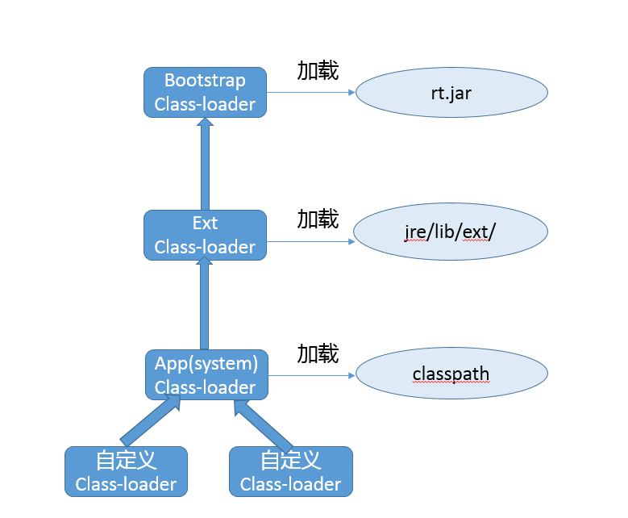

第23讲 | 请介绍类加载过程，什么是双亲委派模型？
Java 通过引入字节码和 JVM 机制，提供了强大的跨平台能力，理解 Java 的类加载机制是深入 Java 开发的必要条件，也是个面试考察热点。
今天我要问你的问题是，请介绍类加载过程，什么是双亲委派模型？
典型回答
一般来说，我们把 Java 的类加载过程分为三个主要步骤：加载、链接、初始化，具体行为在Java 虚拟机规范里有非常详细的定义。
首先是加载阶段（Loading），它是 Java 将字节码数据从不同的数据源读取到 JVM 中，并映射为 JVM 认可的数据结构（Class 对象），这里的数据源可能是各种各样的形态，如 jar 文件、class 文件，甚至是网络数据源等；如果输入数据不是 ClassFile 的结构，则会抛出 ClassFormatError。
加载阶段是用户参与的阶段，我们可以自定义类加载器，去实现自己的类加载过程。
第二阶段是链接（Linking），这是核心的步骤，简单说是把原始的类定义信息平滑地转化入 JVM 运行的过程中。这里可进一步细分为三个步骤：
- 验证（Verification），这是虚拟机安全的重要保障，JVM 需要核验字节信息是符合 Java 虚拟机规范的，否则就被认为是 VerifyError，这样就防止了恶意信息或者不合规的信息危害 JVM 的运行，验证阶段有可能触发更多 class 的加载。
- 准备（Preparation），创建类或接口中的静态变量，并初始化静态变量的初始值。但这里的“初始化”和下面的显式初始化阶段是有区别的，侧重点在于分配所需要的内存空间，不会去执行更进一步的 JVM 指令。
- 解析（Resolution），在这一步会将常量池中的符号引用（symbolic reference）替换为直接引用。在Java 虚拟机规范中，详细介绍了类、接口、方法和字段等各个方面的解析。
最后是初始化阶段（initialization），这一步真正去执行类初始化的代码逻辑，包括静态字段赋值的动作，以及执行类定义中的静态初始化块内的逻辑，编译器在编译阶段就会把这部分逻辑整理好，父类型的初始化逻辑优先于当前类型的逻辑。
再来谈谈双亲委派模型，简单说就是当类加载器（Class-Loader）试图加载某个类型的时候，除非父加载器找不到相应类型，否则尽量将这个任务代理给当前加载器的父加载器去做。使用委派模型的目的是避免重复加载 Java 类型。
考点分析
今天的问题是关于 JVM 类加载方面的基础问题，我前面给出的回答参考了 Java 虚拟机规范中的主要条款。如果你在面试中回答这个问题，在这个基础上还可以举例说明。
我们来看一个经典的延伸问题，准备阶段谈到静态变量，那么对于常量和不同静态变量有什么区别？
需要明确的是，没有人能够精确的理解和记忆所有信息，如果碰到这种问题，有直接答案当然最好；没有的话，就说说自己的思路。
我们定义下面这样的类型，分别提供了普通静态变量、静态常量，常量又考虑到原始类型和引用类型可能有区别。
public class CLPreparation {
public static int a = 100;
public static final int INT_CONSTANT = 1000;
public static final Integer INTEGER_CONSTANT = Integer.valueOf(10000);
}
编译并反编译一下：
Javac CLPreparation.java
Javap –v CLPreparation.class
可以在字节码中看到这样的额外初始化逻辑：
0: bipush 100
2: putstatic #2 // Field a:I
5: sipush 10000
8: invokestatic #3 // Method java/lang/Integer.valueOf:(I)Ljava/lang/Integer;
11: putstatic #4 // Field INTEGER_CONSTANT:Ljava/lang/Integer;
这能让我们更清楚，普通原始类型静态变量和引用类型（即使是常量），是需要额外调用 putstatic 等 JVM 指令的，这些是在显式初始化阶段执行，而不是准备阶段调用；而原始类型常量，则不需要这样的步骤。
关于类加载过程的更多细节，有非常多的优秀资料进行介绍，你可以参考大名鼎鼎的《深入理解 Java 虚拟机》，一本非常好的入门书籍。我的建议是不要仅看教程，最好能够想出代码实例去验证自己对某个方面的理解和判断，这样不仅能加深理解，还能够在未来的应用开发中使用到。
其实，类加载机制的范围实在太大，我从开发和部署的不同角度，各选取了一个典型扩展问题供你参考：
- 如果要真正理解双亲委派模型，需要理解 Java 中类加载器的架构和职责，至少要懂具体有哪些内建的类加载器，这些是我上面的回答里没有提到的；以及如何自定义类加载器？
- 从应用角度，解决某些类加载问题，例如我的 Java 程序启动较慢，有没有办法尽量减小 Java 类加载的开销？
另外，需要注意的是，在 Java 9 中，Jigsaw 项目为 Java 提供了原生的模块化支持，内建的类加载器结构和机制发生了明显变化。我会对此进行讲解，希望能够避免一些未来升级中可能发生的问题。
知识扩展
首先，从架构角度，一起来看看 Java 8 以前各种类加载器的结构，下面是三种 Oracle JDK 内建的类加载器。
- 启动类加载器（Bootstrap Class-Loader），加载 jre/lib 下面的 jar 文件，如 rt.jar。它是个超级公民，即使是在开启了 Security Manager 的时候，JDK 仍赋予了它加载的程序 AllPermission。
对于做底层开发的工程师，有的时候可能不得不去试图修改 JDK 的基础代码，也就是通常意义上的核心类库，我们可以使用下面的命令行参数。
# 指定新的 bootclasspath，替换 java.* 包的内部实现
java -Xbootclasspath:<your_boot_classpath> your_App
# a 意味着 append，将指定目录添加到 bootclasspath 后面
java -Xbootclasspath/a:<your_dir> your_App
# p 意味着 prepend，将指定目录添加到 bootclasspath 前面
java -Xbootclasspath/p:<your_dir> your_App
用法其实很易懂，例如，使用最常见的 “/p”，既然是前置，就有机会替换个别基础类的实现。
我们一般可以使用下面方法获取父加载器，但是在通常的 JDK/JRE 实现中，扩展类加载器 getParent() 都只能返回 null。
public final ClassLoader getParent()
- 扩展类加载器（Extension or Ext Class-Loader），负责加载我们放到 jre/lib/ext/ 目录下面的 jar 包，这就是所谓的 extension 机制。该目录也可以通过设置 “java.ext.dirs”来覆盖。
java -Djava.ext.dirs=your_ext_dir HelloWorld
- 应用类加载器（Application or App Class-Loader），就是加载我们最熟悉的 classpath 的内容。这里有一个容易混淆的概念，系统（System）类加载器，通常来说，其默认就是 JDK 内建的应用类加载器，但是它同样是可能修改的，比如：
java -Djava.system.class.loader=com.yourcorp.YourClassLoader HelloWorld
如果我们指定了这个参数，JDK 内建的应用类加载器就会成为定制加载器的父亲，这种方式通常用在类似需要改变双亲委派模式的场景。
具体请参考下图：

至于前面被问到的双亲委派模型，参考这个结构图更容易理解。试想，如果不同类加载器都自己加载需要的某个类型，那么就会出现多次重复加载，完全是种浪费。
通常类加载机制有三个基本特征：
- 双亲委派模型。但不是所有类加载都遵守这个模型，有的时候，启动类加载器所加载的类型，是可能要加载用户代码的，比如 JDK 内部的 ServiceProvider/ServiceLoader机制，用户可以在标准 API 框架上，提供自己的实现，JDK 也需要提供些默认的参考实现。 例如，Java 中 JNDI、JDBC、文件系统、Cipher 等很多方面，都是利用的这种机制，这种情况就不会用双亲委派模型去加载，而是利用所谓的上下文加载器。
- 可见性，子类加载器可以访问父加载器加载的类型，但是反过来是不允许的，不然，因为缺少必要的隔离，我们就没有办法利用类加载器去实现容器的逻辑。
- 单一性，由于父加载器的类型对于子加载器是可见的，所以父加载器中加载过的类型，就不会在子加载器中重复加载。但是注意，类加载器“邻居”间，同一类型仍然可以被加载多次，因为互相并不可见。
在 JDK 9 中，由于 Jigsaw 项目引入了 Java 平台模块化系统（JPMS），Java SE 的源代码被划分为一系列模块。

类加载器，类文件容器等都发生了非常大的变化，我这里总结一下：
- 前面提到的 -Xbootclasspath 参数不可用了。API 已经被划分到具体的模块，所以上文中，利用“-Xbootclasspath/p”替换某个 Java 核心类型代码，实际上变成了对相应的模块进行的修补，可以采用下面的解决方案：
首先，确认要修改的类文件已经编译好，并按照对应模块（假设是 java.base）结构存放， 然后，给模块打补丁：
java --patch-module java.base=your_patch yourApp
- 扩展类加载器被重命名为平台类加载器（Platform Class-Loader），而且 extension 机制则被移除。也就意味着，如果我们指定 java.ext.dirs 环境变量，或者 lib/ext 目录存在，JVM 将直接返回错误！建议解决办法就是将其放入 classpath 里。
- 部分不需要 AllPermission 的 Java 基础模块，被降级到平台类加载器中，相应的权限也被更精细粒度地限制起来。
- rt.jar 和 tools.jar 同样是被移除了！JDK 的核心类库以及相关资源，被存储在 jimage 文件中，并通过新的 JRT 文件系统访问，而不是原有的 JAR 文件系统。虽然看起来很惊人，但幸好对于大部分软件的兼容性影响，其实是有限的，更直接地影响是 IDE 等软件，通常只要升级到新版本就可以了。
- 增加了 Layer 的抽象， JVM 启动默认创建 BootLayer，开发者也可以自己去定义和实例化 Layer，可以更加方便的实现类似容器一般的逻辑抽象。
结合了 Layer，目前的 JVM 内部结构就变成了下面的层次，内建类加载器都在 BootLayer 中，其他 Layer 内部有自定义的类加载器，不同版本模块可以同时工作在不同的 Layer。
谈到类加载器，绕不过的一个话题是自定义类加载器，常见的场景有：
- 实现类似进程内隔离，类加载器实际上用作不同的命名空间，以提供类似容器、模块化的效果。例如，两个模块依赖于某个类库的不同版本，如果分别被不同的容器加载，就可以互不干扰。这个方面的集大成者是Java EE和OSGI、JPMS等框架。
- 应用需要从不同的数据源获取类定义信息，例如网络数据源，而不是本地文件系统。
- 或者是需要自己操纵字节码，动态修改或者生成类型。
我们可以总体上简单理解自定义类加载过程：
- 通过指定名称，找到其二进制实现，这里往往就是自定义类加载器会“定制”的部分，例如，在特定数据源根据名字获取字节码，或者修改或生成字节码。
- 然后，创建 Class 对象，并完成类加载过程。二进制信息到 Class 对象的转换，通常就依赖defineClass，我们无需自己实现，它是 final 方法。有了 Class 对象，后续完成加载过程就顺理成章了。
具体实现我建议参考这个用例。
我在专栏第 1 讲中，就提到了由于字节码是平台无关抽象，而不是机器码，所以 Java 需要类加载和解释、编译，这些都导致 Java 启动变慢。谈了这么多类加载，有没有什么通用办法，不需要代码和其他工作量，就可以降低类加载的开销呢？
这个，可以有。
- 在第 1 讲中提到的 AOT，相当于直接编译成机器码，降低的其实主要是解释和编译开销。但是其目前还是个试验特性，支持的平台也有限，比如，JDK 9 仅支持 Linux x64，所以局限性太大，先暂且不谈。
- 还有就是较少人知道的 AppCDS（Application Class-Data Sharing），CDS 在 Java 5 中被引进，但仅限于 Bootstrap Class-loader，在 8u40 中实现了 AppCDS，支持其他的类加载器，在目前 2018 年初发布的 JDK 10 中已经开源。
简单来说，AppCDS 基本原理和工作过程是：
首先，JVM 将类信息加载， 解析成为元数据，并根据是否需要修改，将其分类为 Read-Only 部分和 Read-Write 部分。然后，将这些元数据直接存储在文件系统中，作为所谓的 Shared Archive。命令很简单：
Java -Xshare:dump -XX:+UseAppCDS -XX:SharedArchiveFile=<jsa> \
-XX:SharedClassListFile=<classlist> -XX:SharedArchiveConfigFile=<config_file>
第二，在应用程序启动时，指定归档文件，并开启 AppCDS。
Java -Xshare:on -XX:+UseAppCDS -XX:SharedArchiveFile=<jsa> yourApp
通过上面的命令，JVM 会通过内存映射技术，直接映射到相应的地址空间，免除了类加载、解析等各种开销。
AppCDS 改善启动速度非常明显，传统的 Java EE 应用，一般可以提高 20%~30% 以上；实验中使用 Spark KMeans 负载，20 个 slave，可以提高 11% 的启动速度。
与此同时，降低内存 footprint，因为同一环境的 Java 进程间可以共享部分数据结构。前面谈到的两个实验，平均可以减少 10% 以上的内存消耗。
当然，也不是没有局限性，如果恰好大量使用了运行时动态类加载，它的帮助就有限了。
今天我梳理了一下类加载的过程，并针对 Java 新版中类加载机制发生的变化，进行了相对全面的总结，最后介绍了一个改善类加载速度的特性，希望对你有所帮助。
一课一练
关于今天我们讨论的题目你做到心中有数了吗？今天的思考题是，谈谈什么是 Jar Hell 问题？你有遇到过类似情况吗，如何解决呢？